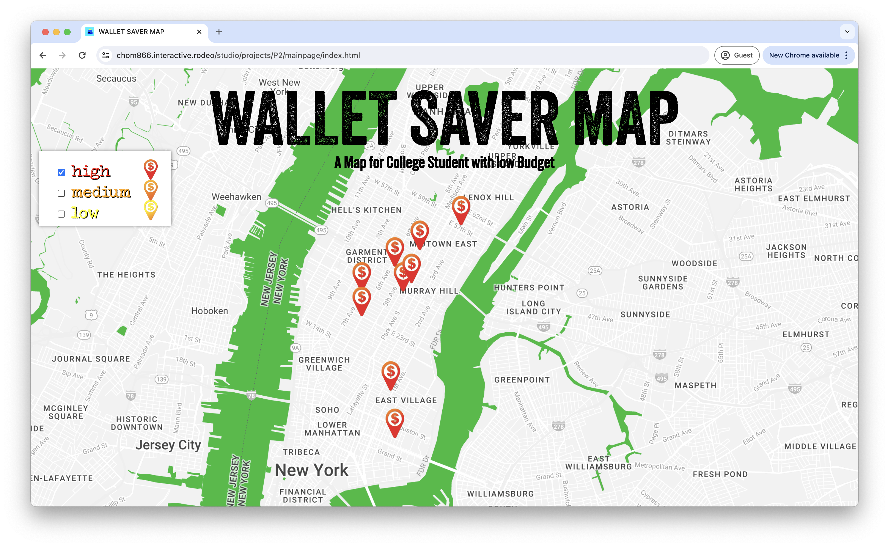

“WALLET SAVER MAP: A Map For College Students Low Budget” is a web design project aimed at providing invaluable assistance to college students navigating Manhattan on a limited budget. Created by Minsung Cho, a sophomore student at Parsons School of Design, this project is a testament to his commitment to addressing real world challenges through design. The main part of the project lies in its organized database of restaurants in Manhattan, each categorized based on affordability. Understanding the financial constraints faced by college students, Minsung has categorized the restaurants into three main groups: high, medium, and low-cost, corresponding to expensive, moderate, and affordable options.
